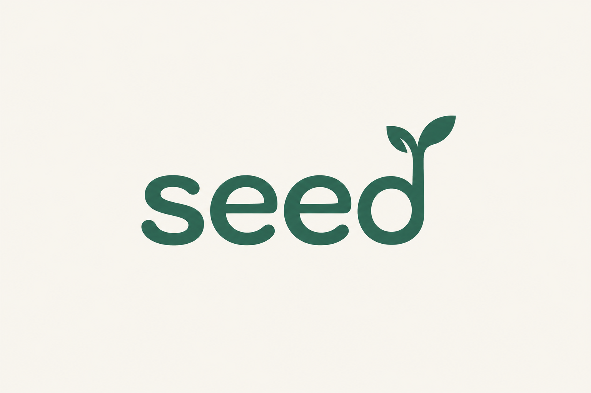

恩送りの、小さな始まり。

使うごとに「ありがとうの種」を蒔く。
人の「できる」が、誰かの助けになる。
そのありがとうが、地域の次の出会いへ。
役割切替は説明用です。実際の認証・アクセス制御ではありません。入力はこのタブ内だけで保持し、再読込でリセットします。個人情報は入力しないでください。
seedの約束を、地域と一緒につくる。
付与額・換算率・発行主体・原資・有効期限・利用範囲は未決定です。このデモの「500 seed付与」「300 seed利用」「実証付与枠10,000 seed」は操作説明用の仮設定です。
seedを受け取るお店にも、継続できる精算の仕組みが必要です。実運用では地域の制度・安全・労務・会計・個人情報の扱いを確認し、責任と費用を決めます。
役場がすべてを担うとは限りません。地域の事務局、事業者、住民との役割分担を話し合うための画面です。